In the heart of Canggu, Bali’s most happening neighbourhood, The Villas Ion pairs luxury living with breathtaking rice field views.
Its three four-bedroom villas are nestled amid Bali’s culinary gems, a mere seven-minute ride from Batu Bolong Beach, the renowned surfing spot.
- Location
- Batu Bolong, Canggu
- Land
- 2,000 sqm
- Villas
- Ena, Dyo and Tria, four bedrooms each
- Built
- Ena 440 sqm
Dyo 380 sqm
Tria 540 sqm - Completed
- June 2024
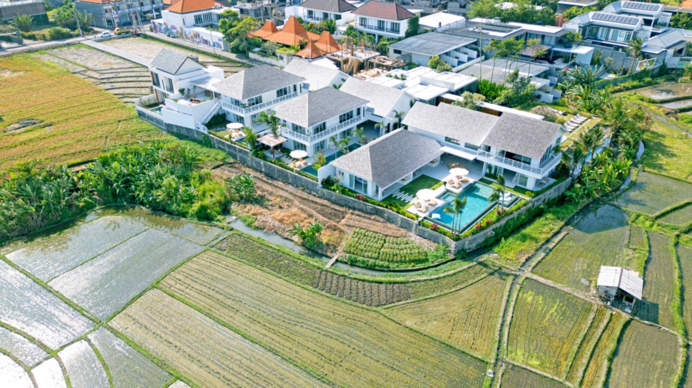
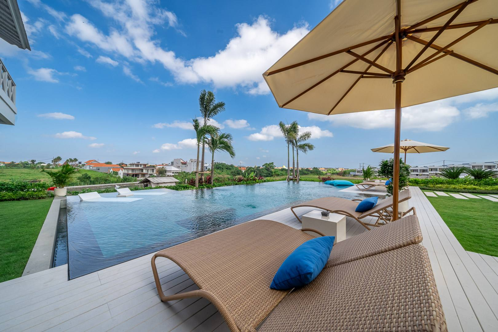
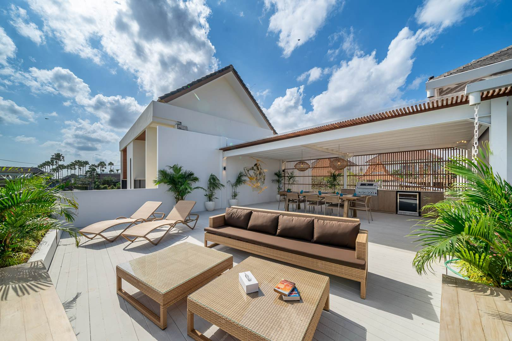
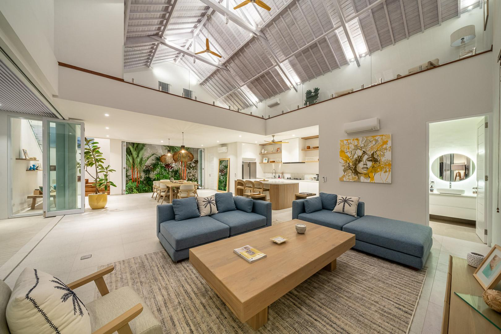
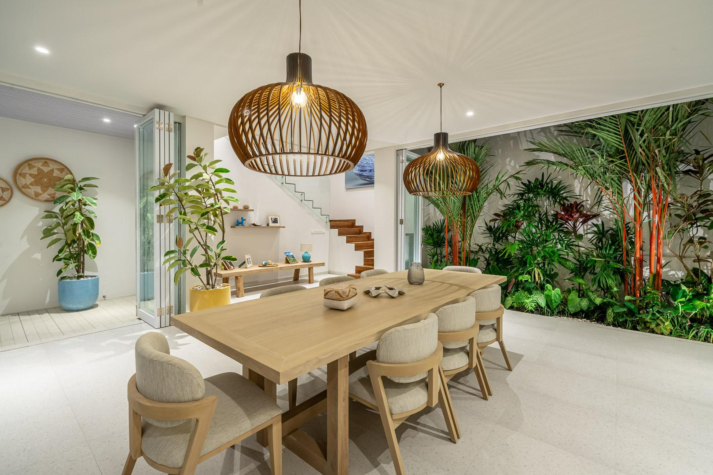
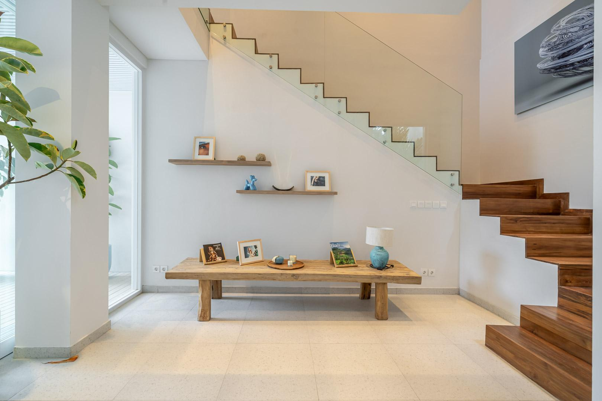
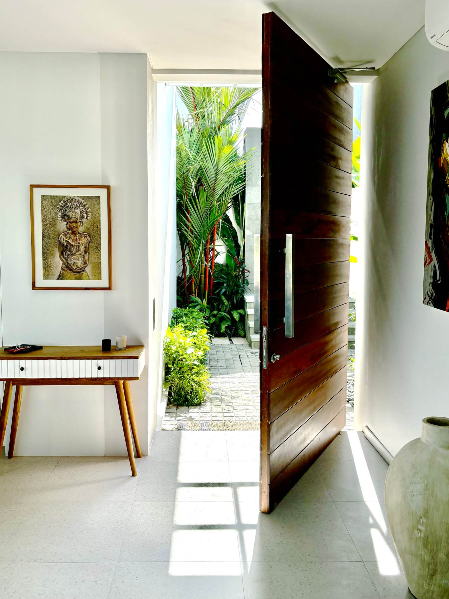
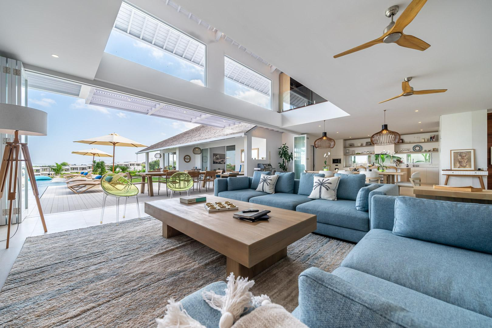
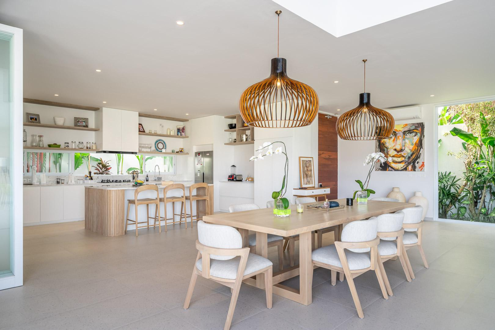
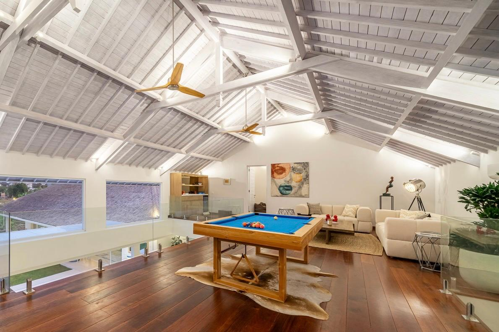
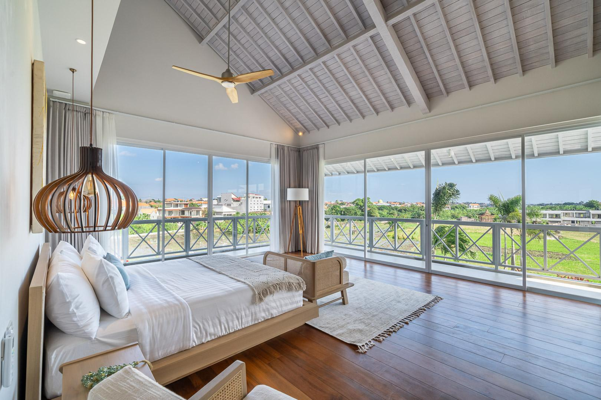
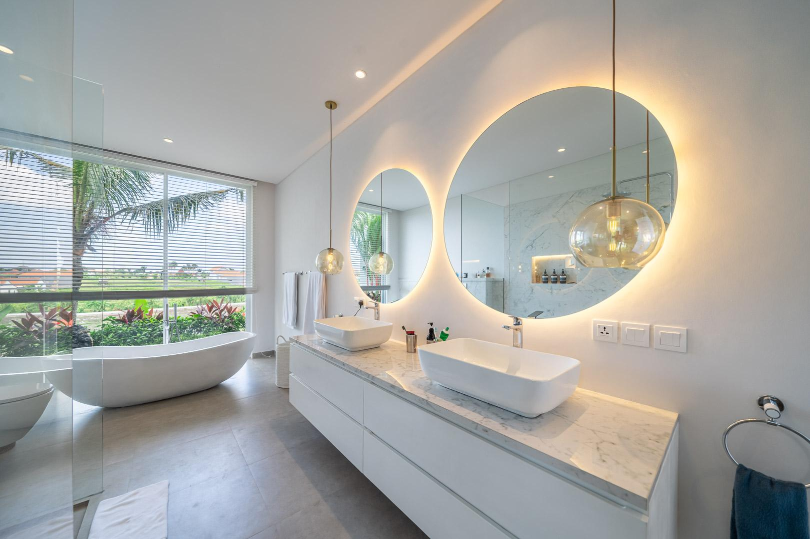